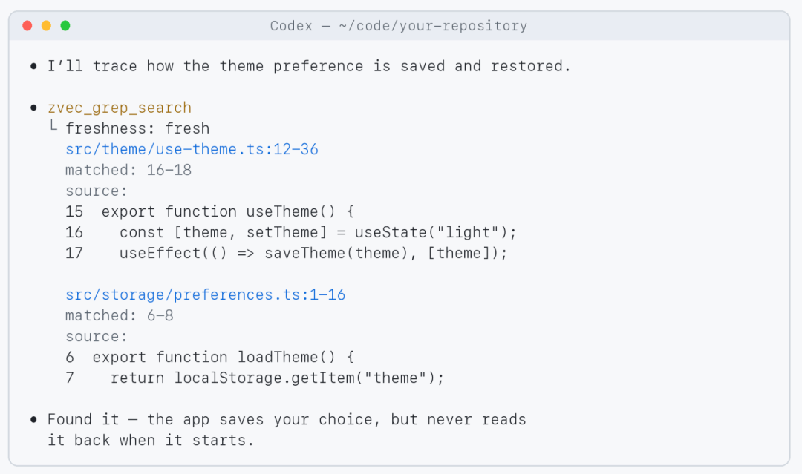

1.6K Star！阿里开源zg：一条命令解决Agent时代的本地检索难题
来源：微信公众号 归档日期：2026-09-10 抓取状态：成功 原文字符：3504｜配图：3 张
摘要速览
- zg 是阿里开源的本地代码语义检索工具：
zg index一条命令为仓库建索引，Agent 可用自然语言搜代码 - 默认使用 16M 参数本地嵌入模型（约 32MB 缓存，无需 GPU），M4 Pro 上为 3457 文件的 Django 仓库建索引不到 30 秒
- 索引存于项目根目录
.zvec-grep/，按文件增量更新，修改文件无需全量重建
核心内容
- 安装方式：为 Cursor / CLI Agent 配置 MCP 或 CLI 后即可调用，与现有 Agent 工作流低耦合
- 索引机制：代码切片 → 本地向量模型嵌入 → 落盘向量库；以文件为单位做增量失效与重建
- 可换嵌入模型：
zg index --embedding local/jina-embeddings-v2-base-code，也支持远程模型（需 API Key） - 定位：补齐 grep（精确文本匹配）与语义搜索之间的空档——"明明知道函数名，语义搜索却带回一堆意思相近的代码"这类问题的反面场景
- 适用场景：大仓库快速 onboarding、Agent 跨文件定位实现、无网/保密环境的本地语义检索
可执行启发
- 在 Mac Mini 的 Agent 工作流里，为常驻项目仓库建 zg 索引，把"语义找代码"变成固定工具而不是每次现推
- 与 grep 组合使用：精确符号用 grep，模糊意图用 zg，两层检索互补
归属：[[02-输入/按主题/工具与技术/_index|工具与技术]]
我的想法
（待补充）
原文沉淀
目录
大家有没有遇到过这样的场景——
你让 AI Agent 帮你找"启动时恢复主题偏好"的代码逻辑。Agent 拿着这句话开始搜索：先搜 theme preference，没结果；换 restore theme，还是没有；再试 startup settings……几轮下来读了一堆无关文件，最后给出的答案还是错的。
而代码里，这个函数其实叫 hydratePreferences。
这不是 Agent 不够聪明，而是它手里的工具不对。
Agent 拿到的是自然语言意图，手里默认能用的检索工具 ripgrep（也就是大家常说的 rg），却只认得精确的关键词匹配。
代码命名和自然语言描述之间的"词汇鸿沟"，让 Agent 陷入了一个典型的恶性循环：猜关键词 → 搜一遍 → 信息不够 → 换个词再搜……
每一轮循环都是真金白银的消耗：更多的工具调用、更多的 Token、更长的等待时间。更让人担心的是，Agent 可能基于不完整的信息就得出了结论，而这种错误你还很难察觉。
本地检索要补的不是"更快的 grep"，而是三块新能力：语义发现、相关性排序、上下文组织。
阿里最近开源的 zg（zvec-grep），就是冲着这个痛点来的——把 ripgrep、BM25、向量检索这三种截然不同的搜索能力，装进了同一个本地优先的 CLI 工具里。

既可以让人在终端里用，也可以让 AI Agent 通过 MCP 协议直接调用。
什么是 zg？
zg 是 zvec-grep 的缩写，一句话概括就是：面向人与 AI Agent 的本地优先统一检索层。
它不是要造一个新的 grep，也不是要取代 ripgrep。恰恰相反，zg 把 ripgrep 作为自己能力矩阵中的一个环节，和 BM25 关键词检索、向量语义检索放在同一个入口里，让使用者（不管是人还是 Agent）可以根据任务阶段选择最合适的检索方式。
这个项目来自阿里的 Zvec 团队——对，就是那个在 2025 年底开源、主打嵌入式高性能向量检索的 Zvec 数据库。
Zvec 已经在阿里内部跑了很久，是生产级的向量检索引擎。而 zg 则是 Zvec 体系中一个面向终端用户和 AI Agent 的上层应用，把 Zvec 的向量能力包装成开发者日常能用的搜索工具。
zg 的核心设计理念可以用四个词总结：
- • 端到端检索：从模糊的意图探索，到相关性排序后的聚焦，再到精确的词面验证，每个阶段都有对应的检索模式
- • 多格式支持：不只是搜代码，还能搜 Markdown、文档、结构化数据（JSON/YAML/TOML），甚至能保留代码的符号签名和文档的章节结构
- • 上下文高效：多路检索融合排序，默认只返回紧凑的证据片段，不把整文件塞进上下文
- • 本地优先：文件扫描、索引构建、Embedding 生成都在本机完成，数据不出设备，远程模型需要显式授权
快速上手
第一步：安装 zg
# 全局安装
npm install -g @zvec/zvec-grep
# 验证安装
zg --version安装完可以先跑一下：
# 自动发现并配置本机已安装的 AI Agent
zg install这条命令会扫描常见的 Agent 客户端并自动写入 MCP 配置。也可以手动指定目标：
zg install --target codex --yes # 只给 Codex 配
zg install --target cursor --yes # 只给 Cursor 配第二步：为你的工作区建索引
cd /path/to/your/project
zg index默认使用轻量级本地模型 local/potion-code-16m-v2，16M 参数，模型缓存约 32MB，不需要 GPU。官方数据显示，在 Apple M4 Pro 上，为 Django（3457 个文件）建索引不到 30 秒。
索引建完后存在 <项目根目录>/.zvec-grep/ 下，增量更新以文件为单位——修改过的文件删除旧片段后重新抽取、重新嵌入，不需要全量重建。
想换模型？加上 --embedding 参数：
# 使用不同的本地模型
zg index --embedding local/jina-embeddings-v2-base-code
# 使用远程模型（需要先配置 API Key 并授权）
zg index --embedding qwen/qwen3.7-text-embedding --allow-remote第三步：开始搜索
在终端中直接搜：
# 混合检索（默认）
zg query --human "theme preference persistence on startup"
# 纯向量检索
zg query --vector "how does the system cache user session"
# 纯 BM25 关键词检索
zg query --fts "session cache"
# ripgrep 精确匹配（无需索引）
zg query --rg "hydratePreferences"--human 参数会优化输出格式，适合人读。结果按相关性排序，默认返回紧凑的证据片段，不加载完整文件内容——这样不会浪费上下文。
在 AI Agent 中搜：
配置好 MCP 后，直接在 Agent 里提问就行：
# Codex / Claude Code / Cursor 中直接说
Find how theme preferences are restored on startup.Agent 会自主判断该用混合检索还是 ripgrep，然后返回带文件路径和行号的证据。
写在最后
ripgrep 之所以成为开发者和 Agent 的标配检索工具，不是因为它"最好"，而是因为它在它擅长的领域——精确、快速、穷尽的词面匹配。
但 Agent 时代的检索需求正在变：我们想搜的不再只是"某个函数叫什么"，而是"启动时恢复主题偏好的逻辑在哪里"、"用户权限申请的流程是怎样的"。这些问题没有精确的关键词，只有模糊的意图。
zg 的价值不在于发明了什么新算法，而在于它把语义检索、BM25、混合排序和 ripgrep 精确匹配组织成了一条完整的本地检索流水线，然后用一种开发者和 Agent 都能直接用的方式交付出来。
安装一次，索引一次，就能在终端里搜，也能让 Agent 在同一个索引上搜。本地优先，数据不出设备。
GitHub：https://github.com/zvec-ai/zvec-grep

如果本文对您有帮助，也请帮忙点个 赞👍 + 在看 哈！❤️
在看你就赞赞我！

归属：[[02-输入/按主题/工具与技术/_index|工具与技术]]